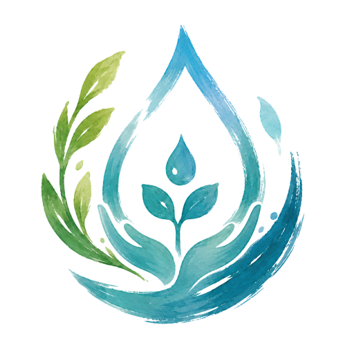
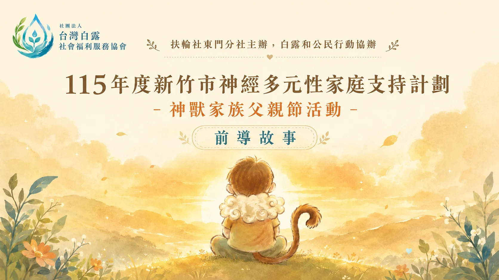
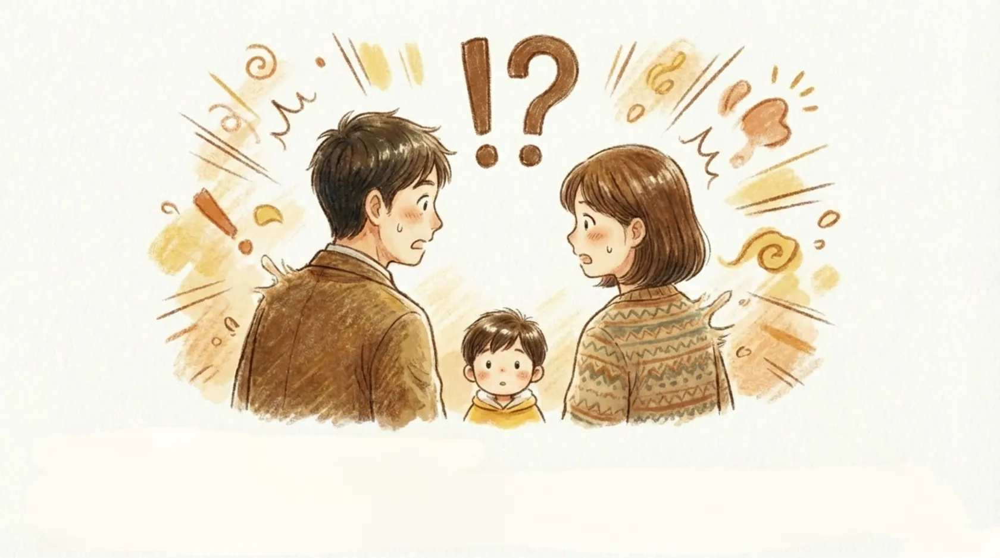
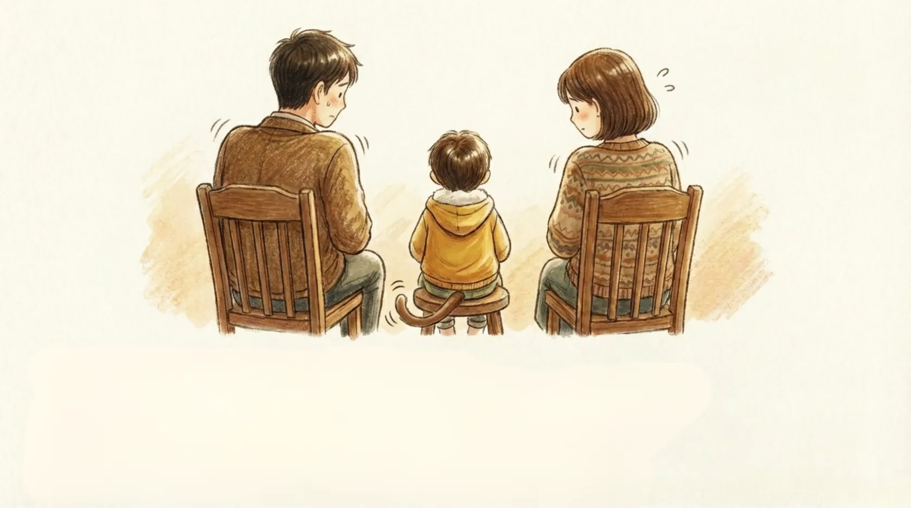
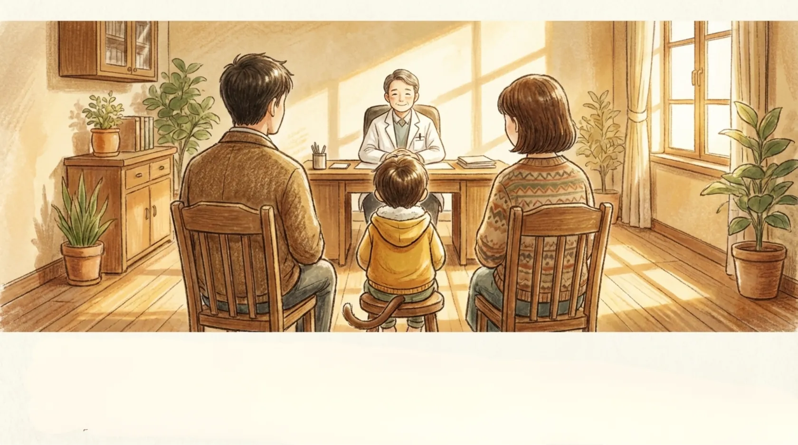
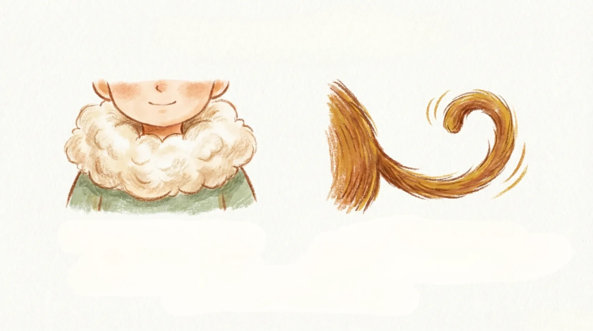
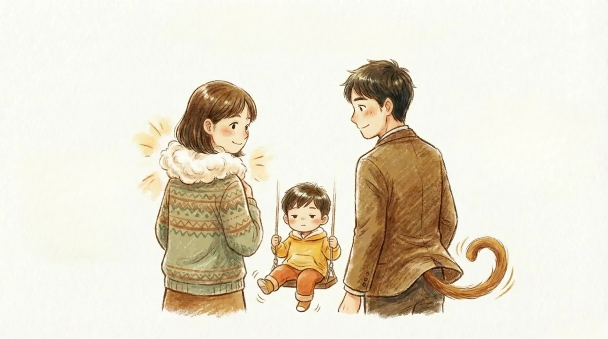
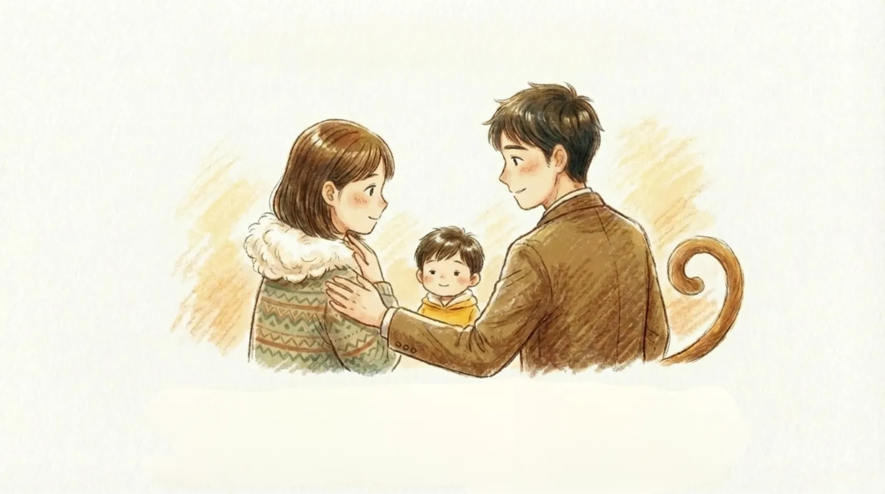
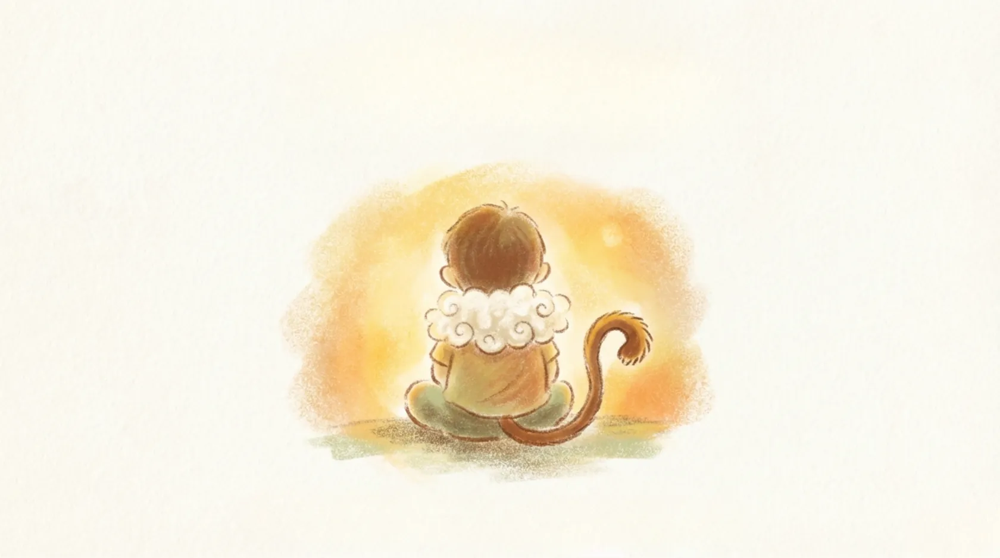
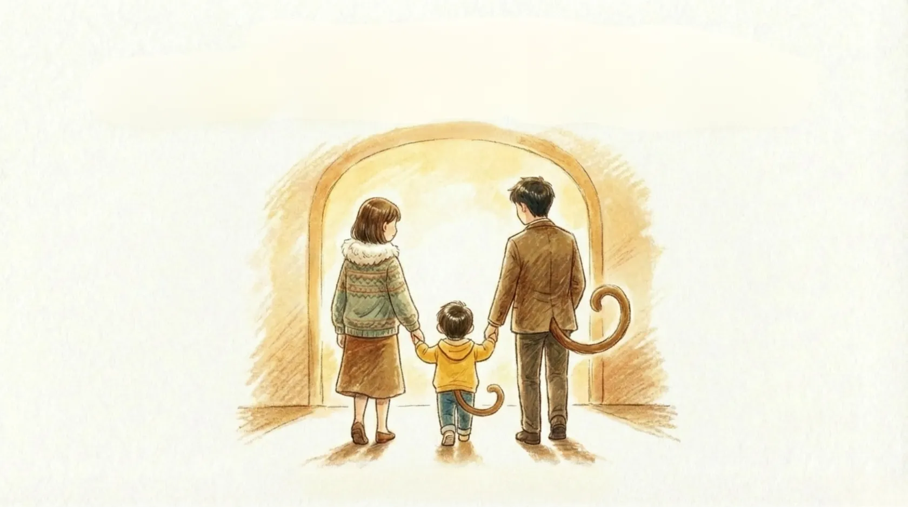

Prologue · 前導故事
一個關於「看見」的故事
在活動啟動前，我們先用一段繪本般的故事，邀請您走進神經多元性家庭的日常——從困惑、疲憊，到理解與和解。

我家小神獸
初秋的白露，是清晨悄悄凝結的小水珠。
每一個與眾不同的孩子，也都藏著一束，等待被看見的光。
白露，是初秋微涼時悄悄凝結的小水珠；清晨而起，便見它遍布、滋養大地。當第一線的助人者被善待，善便能形成循環，流向更多需要的家庭——而這一次，我們把目光，放在 ADHD 的孩子與他們的家。
陪伴第一線工作者，照顧好自己的身心與能量。
為需要支持的群體，提供穩定而溫柔的協助。
成為「善的起點」，讓理解與溫暖向外蔓延。
ADHD（注意力不足過動症）是一種神經多元性的展現。誤解與標籤，常讓孩子與照顧者都背負了沉重的壓力。我們想做的，是換一種眼光——把那些常被當成「缺點」的特質，重新看見它背後的能量與光。這，正是「小神獸」的起點。
在活動啟動前，我們先用一段繪本般的故事，邀請您走進神經多元性家庭的日常——從困惑、疲憊，到理解與和解。

家裡常有一陣收不住的旋風。爸媽手足無措，問號與驚嘆號在頭頂上打轉——「為什麼別的孩子做得到，他卻好難？」

一次次的提醒、一回回的崩潰。照顧者把力氣都給了孩子，卻常常忘了——自己也需要被接住。

鼓起勇氣走進那扇門。專業的陪伴讓一家人慢慢明白——這不是誰的錯，而是一段，需要被好好理解的旅程。

收不住的活力，是風一般的速度；停不下的好奇，是探索世界的觸角。仔細看——孩子身上，悄悄長出了只屬於他的，小神獸的鬃毛與尾巴。

當父母不再只看見「問題」，而看見「特質」，緊繃的關係慢慢鬆開，笑容，又回到了家裡。

一個擁抱，一句「我懂了」。被理解的孩子安心了，被支持的爸媽，也終於能好好喘一口氣。

他們不需要被「矯正」成別人的樣子。當世界願意換一個眼光，那些曾被誤解的特質，會在父親節的這一天，發出最溫暖的光。

牽起手，走過那道光的拱門。神獸家族的故事，從一個被理解的家開始，慢慢蔓延成——更多家庭的希望。
「小神獸」是一種去汙名化的溫柔轉譯。我們邀請家長書寫孩子的日常，再把那些獨特之處，重新詮釋成一隻專屬於孩子的神獸——讓孩子的能量，被理解、被喜愛。
用不完的活力，是探索世界最好的引擎。
對細節與變化的高度敏感，是創造力的來源。
源源不絕的點子，是與眾不同的禮物。
活動網站上線時，我們將同步發布一支前導宣傳影片，作為徵稿的第一波號召，邀請更多家庭走進神獸家族的故事。
＊ 前導影片將於網站上線時嵌入此處（30–60 秒徵稿宣傳片）。
我們刻意把參與門檻降到最低——家長不需要會寫作、也不需要會畫畫，只要用手機，分享一段關於孩子的日常就好。
透過手機表單，以生活化的提問，分享孩子的特質與照顧的酸甜苦辣。
在去識別化與授權規範下，依投稿內容，為孩子生成專屬的小神獸圖像。
挑選 8 件入選故事，委請廠商製作成可愛的壓克力立牌與紀念小卡。
七月底前寄送到家；邀請家庭於 8 月 8 日上傳合照，標記協會與扶輪社。
從七月初網站與影片上線，到八月八日父親節公開揭曉，每一步都圍繞著「家庭被看見」這件事而展開。
完成活動頁、投稿表單、授權提醒、FAQ、前導影片與第一波社群圖文。
蒐集家長投稿，進行資格檢核、內容審閱、去識別化與入選名單確認。
依入選故事製作神獸圖像、電子圖卡、壓克力立牌與紀念小卡。
完成收件資料確認與禮物寄送，提供 8 月 8 日社群分享指引。
公開成果網站與社群成果，邀請家庭上傳禮物合照，標記協會與扶輪社，讓善的循環被更多人看見。
本活動由扶輪社東門分社擔任主辦與資助單位，白露協會與公民行動協辦執行。我們將把這份資助，化為看得見的故事、圖像、禮物與社群影響力。
支持父親節公益倡議、整合資源、活動冠名與社群推廣，使神經多元性家庭支持議題，進入更廣泛的公共視野。
負責活動設計、網站與表單、家長聯繫、內容審閱、去識別化、AI 圖像轉化、紀念禮物製作與成果報告。
協助公共倡議、社群動員與成果分享，讓家庭故事與社會理解，形成更緊密的連結。
網站、影片、社群貼文、成果網站與報告，皆呈現扶輪社東門分社主辦資助。
把資源轉化為故事、圖像、禮物與可回報的社群觸及數據。
父親節的節點，能自然引發家庭共感與社群分享。
採去識別化、授權管理與 AI 使用邊界，守護兒少隱私與合作信任。